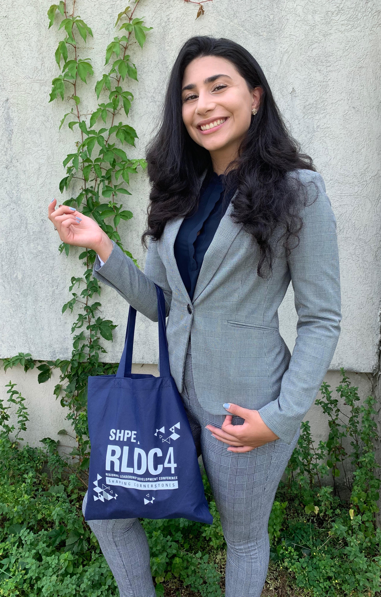

A Concoction of
Art and Coding
Hi there!
Im Valentina - programmer, proud colombiana, passionate designer, and proactive leader.
Education wise, Im a sophmore working towards a B.S. in Computer Science
at Stevens Institute of Technology while also enriching my studies
with future Co-ops.
To maintain peace while balancing a plethora of commitments, I always find myself drinking
a tall glass of boba tea and polishing my amaetear graphic design skills.
Currently, Im looking for a Sping
2020 Co-op that will expose me to
new programming skills I have yet to acquire and become passionate about!
The Society of Hispispainic Professional Engineers (SHPE) is an organization that caught my eye the moment I entered Stevens. Once I joined, I could already see the tremendous dedication our chapter has in the advancement of its members academic, professional, and leadership development. From the beginning I knew I wanted to be a part of an organi zation that focused on the career goals of minorities on campus, especially since many of us coming in are first-generation college students with little knowledge of how to maneuver the professional world.
As current Internal Relations Chair, I am given the opportunity to focus on our SHPE Jr. chapters at Union City Highschool and North Bergen Highschool. My job is to expose these students of lower-income areas to the possibilities STEM has to offer and spark interest in these growing fields. In my term as chair, I saw the need for better structure within the position. I decided to have each week be focused on a branch of engineering, beginning by creating the presentations, choosing the challenges, and budgeting for required supplies before the start of the upcoming 2019 Fall Semester. Our main event is Dia de Las Ciencias, in which we invite not only our Jr. chapters, but New Jersey Institute of Technology’s Jr. chapters as well to enjoy various STEM related activities throughout the entire day with the help of SHPE member volunteers.
As a member of SHPE, it is important we also demonstrate our devotion to the community to achieve a well-rounded self. Every semester, our familia joins forces to attend Beach Sweeps; an entire day dedicated to cleaning Sandy Hook Beach, NJ.!!! Being a part of SHPE also means having the ability to go to yearly national and regional conferences to enhance our networking skills and meet with recruiters from our industries to score a Co-op/internship. In 2019, I attended the Regional Leadership Development Conference in Washington, D.C. as preparation for the upcoming National Conference in October 2019. Never having attended a conference, it was an incredible opportunity to get a feel for how conferences function and become more comfortable speaking to recruiters.